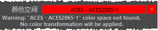

处理已管理颜色的场景时，有些颜色变换可能无法找到。这可能在多种情况下发生。
例如：
- 您打开了使用 OCIO 配置文件的场景，该文件在您的计算机上不可用。
- 您在具有打开场景的 OCIO 配置之间切换。
- 您打开了场景，但该场景所基于的策略文件与您使用的策略文件不同。
- 您打开了使用旧版 SynColor 模式的场景，该场景使用由用户定义的变换，但该变换在您的计算机上不可用。
颜色空间按名称匹配。如果找不到匹配的颜色空间或变换，则显示一条消息。此外：
- 首选项中缺少的任何颜色空间和变换（如“渲染空间”(Rendering Space)和“视图”(View)）都将还原为其默认值。
- 图像输入节点中任何缺少的颜色空间在属性编辑器中都以红色亮显，且不应用变换。

为了修复这些情况，您具有以下两种选择：
- 将颜色管理首选项更改为包括缺少的变换的设置，即，指定正确的配置文件或者添加缺少的用户变换。
- 如果当前的颜色管理设置已经具有以不同方式命名的等效变换，则可以在属性编辑器中更改“文件”(File)纹理和其他节点的输入空间。若要一次更改多个图像的输入空间，请参见通过重新应用规则自动更改现有的输入颜色空间。